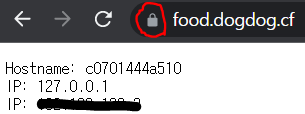

숭실대학교 인턴십 프로그램을 통하여 참여한 차라투에서 인턴으로 활동하며 5주차 동안 학습한 내용에 대해 공유합니다.
목표
Docker와 Traefik을 활용하여 Reverse-Proxy를 구현한다.
목차
- Traefik이란?
- docker-compose.yml 파일 작성
- rules.yml 파일 작성
- 실행결과
- 결론
Traefik이란?
 nginx와 같이 reverse프록시의 종류로서 별도의 제어 없이 실행중에 실시간으로 통신되는 요소끼리 찾아서 연결해주는 기능이 특징입니다. 또한 기본적으로 제공하는 대시보드 기능을 통하여 실시간으로 연결되어 있는 서비스들을 확인할 수 있고 또한 어떤 서버와 연결되어 있는지 파악이 가능합니다.
nginx와 같이 reverse프록시의 종류로서 별도의 제어 없이 실행중에 실시간으로 통신되는 요소끼리 찾아서 연결해주는 기능이 특징입니다. 또한 기본적으로 제공하는 대시보드 기능을 통하여 실시간으로 연결되어 있는 서비스들을 확인할 수 있고 또한 어떤 서버와 연결되어 있는지 파악이 가능합니다.
해당 게시글은 Docker와 Traefik version2.2를 활용한 서비스에서 Reverse-Proxy를 구현하는 방법에 대해 설명 하도록 하겠습니다. 위 이미지에서 보이는 것처럼 Traefik은 들어오는 요청을 각각의 Docker Container에 배정해주는 역할을 수행합니다.
아래 이미지는 Traefik 대시보드 페이지 입니다. 
docker-compose.yml 파일 작성

traefik을 image로 가지고 있는 proxy 컨테이너와, whoami를 image로 가지고 있는 website 컨테이너를 생성하기 위한 docker-compose.yml에 작성된 코드입니다. 해당 코드를 활용하여 traefik으로 각 컨테이너를 어떻게 제어할 수 있는지에 대해 알아보도록 하겠습니다. 먼저 proxy 컨테이너 속 주요 코드를 살펴 보도록 하겠습니다.
Proxy 컨테이너
image: traefik:v2.2
command:
- --entrypoints.web.address=:80
- --entrypoints.websecure.address=:443컨테이너의 이미지로서 traefik:v2.2를 사용하며 entrypoints로서 80번 포트로 들어오는 요청들은 web, 443번 포트로 들어오는 요청들은 websecure로 각각 명명하는 코드입니다
- --certificatesresolvers.re.acme.email=*****@naver.com
- --certificatesresolvers.re.acme.storage=./acme.json
- --certificatesresolvers.re.acme.httpchallenge.entryPoint=websecure웹사이트에 Https를 적용하기 위해 Let’s Encrypt로부터 Certificate를 발급 받는 과정을 ACME protocol을 활용해서 자동으로 발급 받고 적용시킬 수 있도록 해주는 코드입니다.
위 코드에서 ‘re’, ‘email 주소’, ‘acme.json’ 파일의 경로 혹은 파일명’은 사용자가 편하게 수정해도 괜찮습니다. 물론 entryPoint 값 또한 앞서 선언한 entrypoints 중에 본인이 희망하는 포트로 변경해도 괜찮습니다.
해당 코드를 작성하기에 앞서 해당 경로에 acme.json파일을 생성해야 합니다. 이후 코드를 실행시키면 acme.json 파일에 certificate에 대한 내용이 담기게 됩니다.
(아래 이미지는 acme.json 파일의 일부입니다.)

ports:
- 80:80
- 443:443
- 8080:808080번 포트, 443번 포트, 8080포트로 들어오는 요청에 대한 포트 연결입니다.
8080포트는 Traefik dashboard의 기본 포트입니다. 8080포트를 통하여 Traefik dashboard에 접속이 가능합니다.
volumes:
- /var/run/docker.sock:/var/run/docker.sock
- ./rules.yml:/etc/traefik/rules.yml:ro
- ./acme.json:/acme.json traefik이 /var/run/docker.sock를 사용 가능하도록하여 docker container들의 정보를 사용이 가능합니다. 또한 앞서 작성한 acme.json 파일과 앞으로 작성할 rules.yml 파일 또한 사용이 가능하도록하는 코드입니다. rule.yml파일을 통하여 저희는 동작을 제어할것입니다.
Website 컨테이너
website:
image: containous/whoami
labels:
- traefik.http.routers.website.rule=Host('food.dogdog.cf')
- traefik.http.routers.website.tls=true
- traefik.http.routers.website.tls.certresolver=re
- traefik.http.routers.website.entrypoints=websecurewebsite 컨테이너의 image를 containous/whoami로 설정합니다. 또한 http 서비스 제공시 routers 규칙을 traefik.http.routers.website.()를 통해 설정 합니다.’food.dogdog.cf’로 요청이 들어오면 ‘website’컨테이너로 라우팅이 되도록 설정합니다. 또한 https가 가능하도록 ’tls=true’로 설정하며, ’tls/certresolver=re’ 앞서 설정한 re 값을 certresolver값으로 설정합니다. 해당 컨테이너의 entrypoints는 앞서 설정한 :443포트로 들어오는 요청인 ’websecure’로 설정합니다. traefik 동작의 전반적인 이해를 돕고자 이미지를 첨부합니다.

- traefik.http.middlewares.redirect-to-https.redirectscheme.scheme=https
- traefik.http.routers.redirs.rule=hostregexp(`{host:.+}`)
- traefik.http.routers.redirs.entrypoints=web
- traefik.http.routers.redirs.middlewares=redirect-to-httpshttp로 ’food.dogdog.cf’를 통해 들어오는 요청들에 대해서 https로 redirect가 가능하도록 도와주는 코드입니다.
rules.yml 파일 작성
앞서 작성한 docker-compose.yml 파일을 통해서 서비스를 제공하는 기본적인 컨테이너 구축은 완료했습니다. 이제는 특정 요청에 대해서는 외부 서버에 있는 서비스를 이용하도록 하는 rules.yml 파일을 작성하도록 하겠습니다. 
route1:
entryPoints:
-websecure
rule: Host('food.dogdog.cf')&&PathPrefix('/toy')
service: reverse-proxy
tls: {}entrypoints가 websecure로 들어오는 요청(:443포트로 들어오는 요청)에 대해서 만약 ‘food.dogdog.cf/toy’ 요청이면 reverse-proxy라는 서비스로 넘기며 해당 서비스의 내용을 수행하며. tls(https 서비스)를 사용하겠다는 코드입니다. 해당 코드형식만 유지하면 변수명 및 요청명에 대해서는 수정하셔도 됩니다.
실행결과


결론
Traefik을 활용한 reverse-proxy를 구현하는 방법에 대해 알아봤습니다. 실습을 진행하며 파악한 것과 같이 Traefik에서는 let’s Encrypt를 통해 자동으로 https업로드, 대시 보드 제공을 통한 router, service, Middleware 상태 확인등의 기능을 확인할 수 있었습니다. Traefik은 이번 실습에서 다룬 기능보다 많은 기능이 제공되는는 유용한 오픈소스입니다
Citation
@online{jung2022,
author = {Jung, Siyeol},
title = {Docker와 {Traefik을} {활용한} {Reverse-Proxy} {구현}},
date = {2022-02-08},
url = {https://blog.zarathu.com/posts/2022-02-08-traefik-reverseproxy},
langid = {en}
}